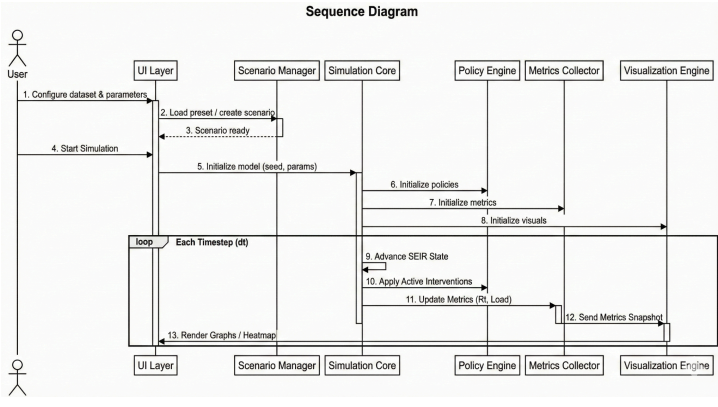

SimuCrisis – Low Level Design Report
1. Introduction
The purpose of this document is to provide detailed low-level design specifications for SimuCrisis, a pandemic disaster management simulation system developed using Unity. SimuCrisis enables users to explore how different intervention strategies such as lockdowns, vaccination policies, and healthcare capacity adjustments affect the spread of infectious diseases and system load. This document expands the high-level design by defining internal components, class structures, data flows, and interfaces required for implementation. The system is designed with a strong emphasis on real-time simulation, modular architecture, performance efficiency, and reproducibility.
1.1 Object Design Trade Offs
The design of SimuCrisis involves several critical engineering trade-offs focused on balancing computational efficiency with educational accuracy:
- Performance vs. Accuracy: A compartment-based SEIR model was selected over agent-based modeling. While agent-based models offer higher granularity, the SEIR model allows for real-time simulation of large populations on standard desktop hardware without performance degradation.
- Hardware Accessibility vs. Novelty: The team intentionally removed Virtual Reality (VR) support. The trade-off was between "visual novelty" and "system usability"; by focusing on a desktop-only version, we ensured the project is accessible to educators and researchers without specialized hardware.
- Modularity vs. Implementation Time: We adopted a Strategy Pattern for the Policy Engine. This increased initial development complexity but ensures that new pandemic policies can be added or modified without changing the Simulation Core.
1.2 Interface Documentation Guidelines
All components follow standardized interface definitions:
- Clear method signatures
- Defined input/output types
- Error handling mechanisms
Interfaces are designed to minimize coupling between modules.
1.3 Engineering Standards
- Ethical Modeling: Following the ACM Code of Ethics, the system is designed to be neutral and educational.
- Documentation & Design: We utilize UML 2.0 for architectural visualization and IEEE software engineering principles.
- Data Integrity: All historical datasets are sourced from the World Health Organization and CDC archives.
1.4 Definitions, Acronyms, and Abbreviations
SEIR: Susceptible, Exposed, Infected, Recovered model
Rt: Effective reproduction number
Scenario: Saved simulation configuration
Intervention: Policy action affecting simulation
2. Packages
2.1 System Decomposition
The system is divided into the following core modules:
- Simulation Core – Runs SEIR model
- Policy Engine – Applies interventions
- Metrics Collector – Computes statistics
- Visualization Engine – Displays results
- Scenario Manager – Saves/loads scenarios
- Report Generator – Exports results
- UI System – Handles user interaction
2.1.1 Simulation Core Package
Purpose: Executes epidemiological simulation
Responsibilities:
- Update SEIR states
- Handle timestep progression
- Maintain simulation state
Key Components:
- SimulationCore
- PopulationModel
2.1.2 Policy Engine Package
Purpose: Applies interventions dynamically
Responsibilities:
- Modify parameters
- Manage policy schedules
Key Components:
- PolicyEngine
- Policy
2.1.3 Metrics Collector Package
Purpose: Computes analytical metrics
Responsibilities:
- Calculate Rt
- Track infection peaks
- Monitor healthcare load
Key Components:
- MetricsCollector
2.1.4 Visualization Package
Purpose: Displays simulation results
Responsibilities:
- Render charts
- Generate heatmaps
Key Components:
- VisualizationEngine
2.1.5 Scenario Manager Package
Purpose: Manages simulation persistence
Responsibilities:
- Save scenarios
- Load scenarios
Key Components:
- ScenarioManager
2.1.6 Report Generator Package
Purpose: Exports simulation data
Responsibilities:
- Generate reports
- Export CSV/PDF
Key Components:
- ReportGenerator
2.1.7 UI Package
Purpose: Handles user interaction
Responsibilities:
- Display dashboard
- Handle user input
Key Components:
- UIManager
- DashboardController
2.1.8 Summary of Package Interactions
SimuCrisis operates on an event-driven update loop:
- UI Layer captures user inputs.
- Policy Engine computes katsayı modifiers based on active interventions.
- Simulation Core solves the SEIR differential equations for the current timestep.
- Metrics Collector derives Rt and healthcare load from the updated state.
- Visualization Engine updates the charts and heatmaps for real-time feedback.

2.2 Subsystems and Components
2.2.1 Hardware Components
Desktop computer
2.2.2 Software Components
Unity Engine
C#
Python
JSON
2.2.3 Operating System
Windows / macOS
2.2.4 Programming Languages
C#
Python
2.2.5 Libraries / Frameworks
UnityEngine
System.Collections
JSON Serialization
2.3 Software Architecture
The system follows a layered modular architecture:
- UI Layer
- Core Layer
- Data Layer
Core Layer manages simulation logic, UI handles interaction, and Data Layer manages persistence.
2.4 Development Environment
Unity Editor
Visual Studio / Rider
Git
3. Class Interfaces

3.1 Simulation Core
Class: SimulationCore (Inherits from MonoBehaviour)
Attributes:
- private SEIRModel _currentModel: Reference to the active mathematical model.
- private List<PopulationData> _history: Buffer for historical run data.
Methods:
- public void Initialize(SimulationConfig config): Loads initial population states and validates against negative values.
- public SimulationSnapshot UpdateStep(float deltaTime): Advances the ODE solver by a specific time step.
3.2 Policy Engine
Class: PolicyEngine
Attributes:
- private List<IPolicy> _activePolicies: A list of currently applied interventions.
Methods:
- public ModifierSet ComputeModifiers(int currentTime): Returns multipliers based on active policies.
- public void ApplyPolicy(PolicyType type, float intensity): Triggers a new intervention event.
3.3 Metrics Collector
Class: MetricsCollector
Attributes:
rtValue: float
Methods:
CalculateRt()
CalculatePeak()
3.4 Visualization Engine
Class: VisualizationEngine
Attributes:
chartData
Methods:
RenderCharts()
GenerateHeatmap()
3.5 Scenario Manager
Class: ScenarioManager
Methods:
- public string SaveScenario(ScenarioData data): Serializes current configurations into JSON format for local storage.
- public ScenarioData LoadScenario(string fileName): Deserializes JSON and performs Schema Validation.
3.6 Report Generator
Class: ReportGenerator
Methods:
GenerateReport()
ExportCSV()
3.7 UI Manager
Class: UIManager
Methods:
DisplayDashboard()
UpdateUI()
4. Glossary
Heatmap: Visualization of infection density
Snapshot: Simulation state at a timestep
Policy: User-defined intervention
5. References
Unity Documentation
IEEE Standards
WHO & CDC Data Sources